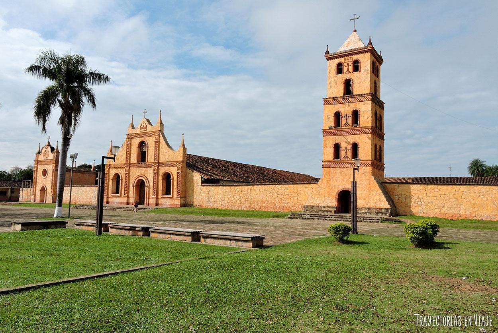
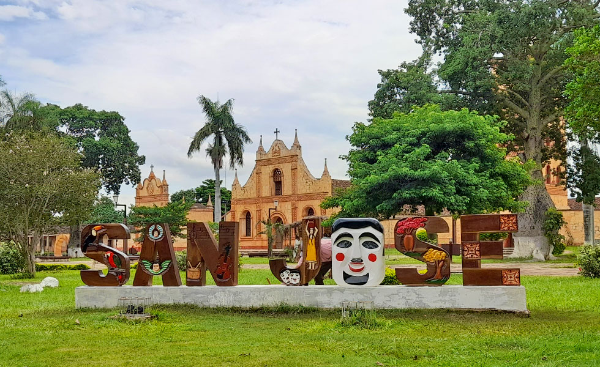
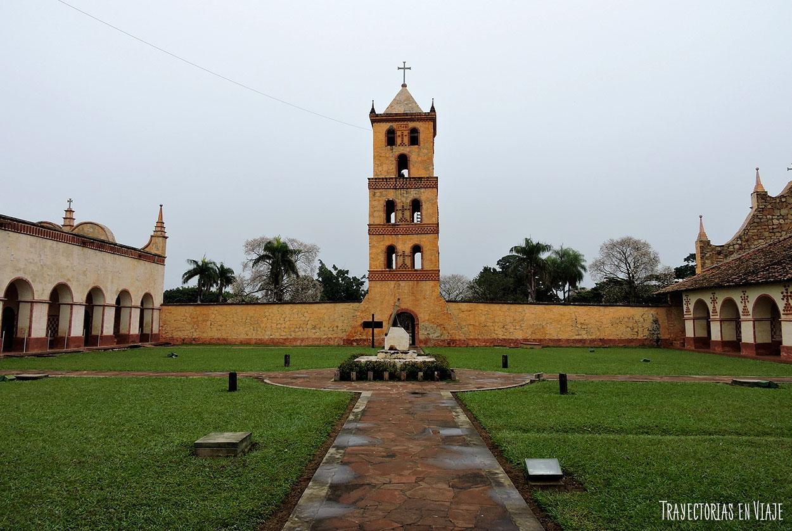
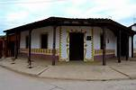
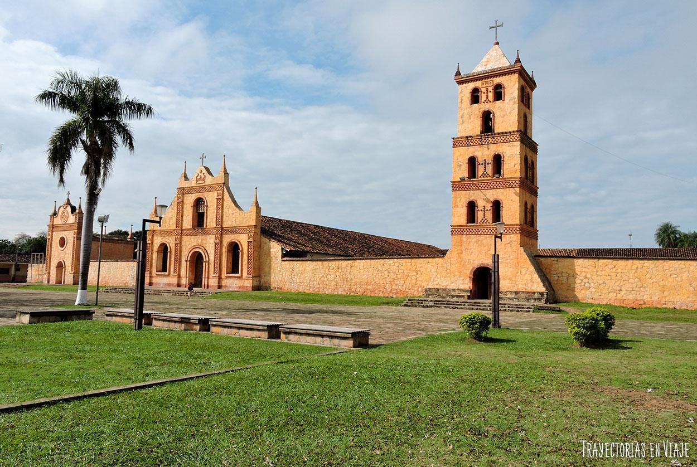
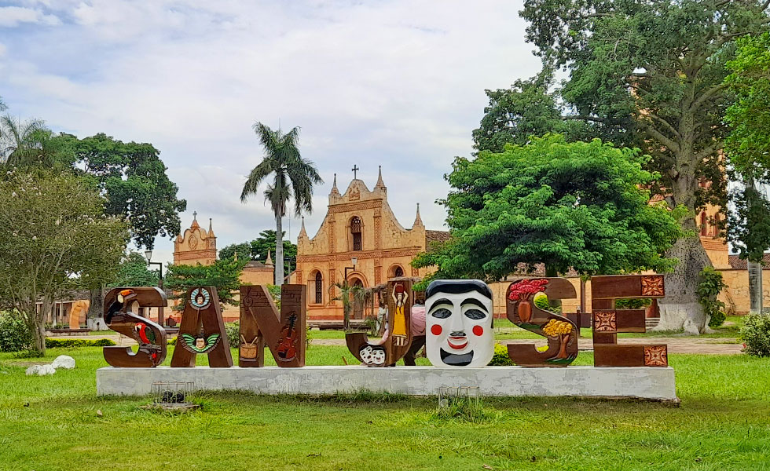
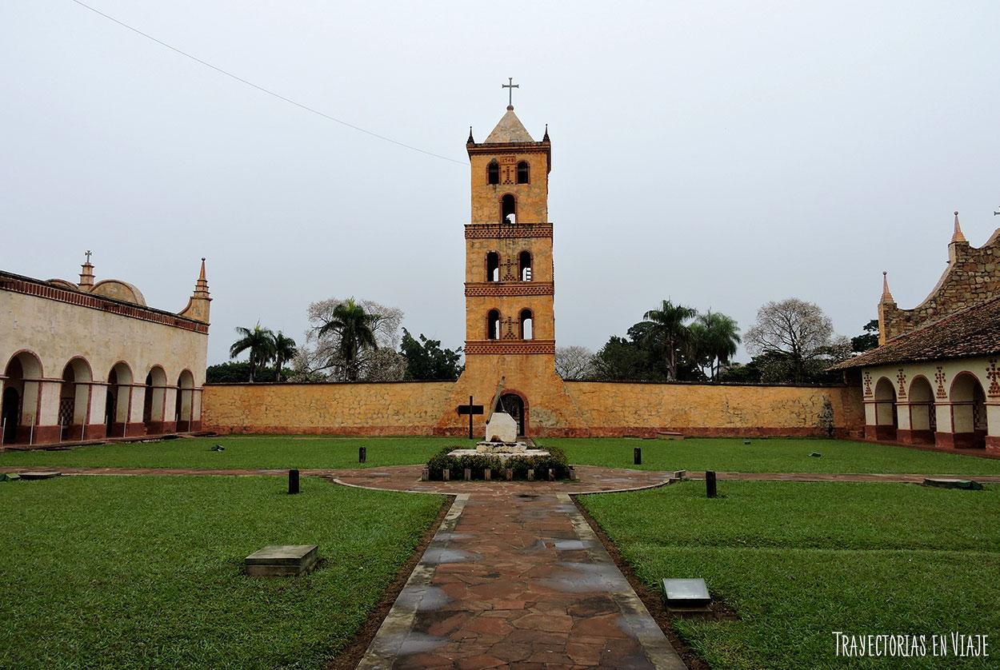
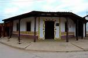
SAN JOSÉ DE CHIQUITOS
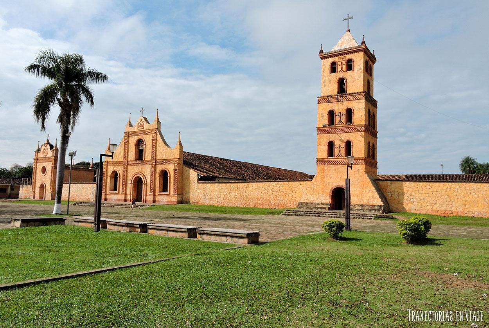
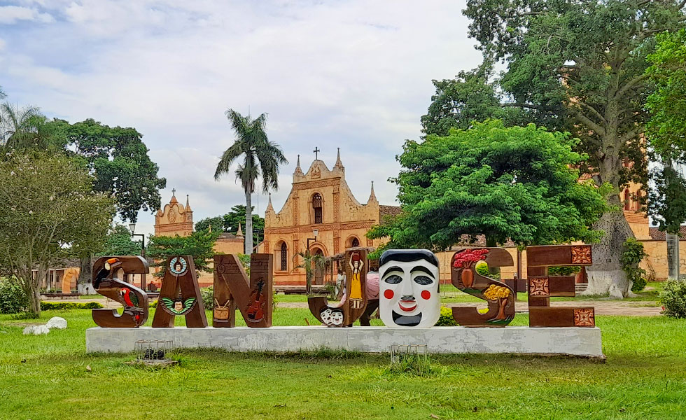
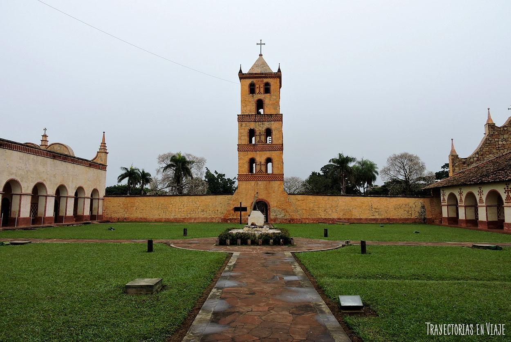
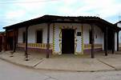
San José de Chiquitos es conocido principalmente por ser uno de los pueblos de las Misiones de Chiquitos nombrado como Patrimonio Mundial y por ser el único de dichos pueblos en tener un templo misional construido integralmente en piedra. También, entre la población local, por ser el lugar donde originalmente se fundó la ciudad de Santa Cruz de la Sierra.
Con todos estos reconocimientos, San José se convirtió en un destino turístico con un legado histórico cultural muy fuerte y poco a poco sus pobladores comenzaron a ofrecer servicios para que los visitantes encuentren nuevas opciones gastronómicas y de actividades.
El turismo es uno de los sectores más importantes en el desarrollo económico de San José de Chiquitos. La ciudad es conocida por su impresionante patrimonio cultural, siendo la iglesia de San José uno de los principales atractivos. Esta iglesia, junto con otras construcciones religiosas cercanas, forman parte de un circuito turístico que incluye las misiones jesuíticas de la región. Además de su patrimonio arquitectónico, la ciudad es famosa por su conexión con la naturaleza y sus paisajes de gran belleza.
San José de Chiquitos está rodeada por áreas naturales de gran valor, como el Parque Nacional Kaa-Iya y la Reserva Forestal de San Matías. Estos lugares ofrecen oportunidades para realizar ecoturismo, con actividades como caminatas, observación de fauna y flora, y visitas a comunidades indígenas locales. La región es hogar de una variedad de especies de animales y plantas, lo que la convierte en un destino ideal para los amantes de la naturaleza y la biodiversidad.
La ciudad se encuentra a unos 600 km de Santa Cruz de la Sierra, la capital del departamento y una de las ciudades más grandes del país.
Volver